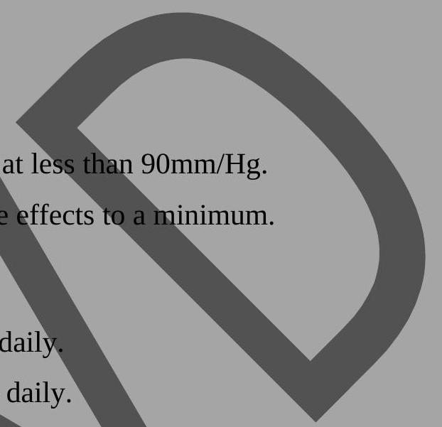

Coronary Heart Disease & Hypertension
CORONARY HEART DISEASES
Terminologies
Arteriosclerotic heart disease, cardiovascular heart disease, ischaemic heart disease, coronary heart disease, coronary artery disease, dysrhythmias. The term is used to describe disease mechanisms involved in the coronary heart disease are plug formation, atheromatous deposits and coronary deposits.
Aetiology and Pathophysiology
The major cause is arteriosclerosis.
Pathophysiology
It is characterized by focal deposits of cholestral and lipids primarily within the intima wall of the artery. The genesis of plug formation is the result of complex interventions between the components of the blood and the elements forming the vascular wall. Intact normal endothelial cell is non-reactive to platelets and leukocytes as well as coagulation fibrinolytic and complement factors. However, the endothelial lining can be altered as a result of chemical injuries such as hyperlipidimia or high shear stress such as hypertension with either type of endothelial alteration. Platelets are activated and release a growth factor that stimulates smooth muscle proliferation. The smooth muscle cell proliferation entraps which are calcified over time and form an irritant to the endothelium upon which the platelets adhere and aggregate. In the process, thrombin is generated and fibrin formation and thrombi occur. This process takes many years to develop that when it becomes symptomatic; the disease process is usually well advanced.
Risk Factors of C.H.D
They are divided into two:
- Unmodifiable risk factors
- Modifiable risk factors
I) Unmodifiable Risk Factors
- Age, Gender and Race
The incidence of coronary heart disease is greater for white middle-aged men. After the age of 60 years, the incidence on men and women equalizes although it may be more increased in women due to increased stress, increased cigarette smoking, presence of hypertension and use of birth control pills. - Family History and Heredity
Genetic predisposition is an important factor in the occurrence of coronary heart disease although the exact mechanism of inheritance isn't fully understood. Some congenital defects in coronary artery walls predispose to the formation of plugs. - Diabetes mellitus
This is because persons with diabetes have increased tendency toward connective tissue degeneration.
II) Modifiable Risk Factors
- Elevated Serum Lipids
A person is at risk of developing coronary heart disease if serum cholesterol level is more than $200 \mathrm{mg} / \mathrm{dl}$.
NOTE: The liver is capable of producing cholesterol from saturated fats even when the dietry intake of fats is severely limited. - Hypertension
It is related to the shearing stress causing injury to the endothelial lining. Arteriosclerosis in turn causes narrowed, thickened arterial walls and decreases the distensibility and extensibility of vessels. - Smoking
The risk of developing coronary heart diseases is $2-6$ higher to cigarette smokers than nonsmokers. Nicotine in the cigarette smoke cause cathecholamine release that causes an increased heart rate, increased blood pressure and peripheral vaso constriction. These changes increase the cardiac work load necessity greater myo-cardial oxygen consumption.
$\mathrm{CO}_{2}$ a by-product of combustion affects the oxygen carrying capacity of Hb by reducing the sites available for oxygen transport. Thus the effects of an increased cardiac workload combined with oxygen depleting effect of $\mathrm{CO}_{2}$ from smoking significantly decrease the oxygen available to the myo-cardium.
Other factors are:
- Obesity
- Sedentary life style
- Stress and behavior patterns
- Type A Behaviour includes: Perfection, hardworking, driving personality. They suppress anger and hostility.
- Have a sense of time urgency. Are impatient and cause stress and within themselves often when a situation does not warrant it.
- Type B Behaviour: Easier going, take upsets in stride, know their limitations. They take time to relax, are not over achievers and are able to keep priorities in perspectives.
Clinical Manifestations
Major three ones for coronary heart disease are.
- Sudden cardiac death (major).
- Angina pectoris.
- Acute myo-cardial infarction.
A. Sudden Cardiac Death
This is unexpected collapse and cardio-pulmonary arrest of a previously well appearing person within minutes to one hour after the onset of acute symptoms. It occurs secondary to natural cause. The affected person may or may not have prior history of a cardiovascular disease.
Significance
This is the leading cause of death in industrialized nations.
Aetiology: In most instances, sudden cardiac death occurs as a primary manifestation of coronary heart disease and victims usually have multi-vessels coronary arteriosclerosis. Persons acho experience sudden cardiac death as a result of coronary heart disease fall into two groups.
- Those who had acute myocardial infarction account for $25 \%$.
- Those who didn't have an acute myo-cardial infarction $75 \%$.
In this group of $75 \%$, victims usually offer no warning signs and have no known symptoms. Death is as a result of disrrythymia formation usually ventricular, tachycardia, ventricular fibrillation or both. These clients are at risk of recurrent sudden death probably because of continued electrical instability of the myocardial which cause the initial event to occur.
The $25 \%$ cases usually do have prodromal symptoms such as chest pain and dyspnoea and they have less chances of recurrence.
Risk Factors to Development of Sudden Cardiac Death
- Male gender.
- Family history of premature arteriosclerosis.
- Cigarette smoking.
Therapeutic Management for Services
- Survivors of sudden cardiac death generally require a diagnostic work up to determine whether they have had an acute myocardial infarction. Thus cereal cardiac ISO enzymes and ECG's must be obtained and the client treated accordingly.
- In addition since most persons with sudden cardiac death have coronary heart disease secondary to multi vessel coronary to arteriosclerosis cardiac catherization is indicated to determine the possible location and extent of coronary artery occlusion.
- Coronary artery by-pass graft surgery may be indicated. Drugs to correct disrrytymias are used such as procainamide, quinidine etc.
- The nurse caring for a survivor of sudden cardiac death needs to be attuned to client psychosocial adaption to this sudden 'brush' with death as these clients develop a time bomb mentality. They fear the recurrence of cardio pulmonary arrest and may become anxious, angry and depressed. There families are likely to experience the same feelings. The nurse should provide emotional support.
B. Angina Pectoris
Def: Is a transient chest pain due to myocardial ischaemia. It is literally translated as pain/angina in the chest/pectoris.
Characteristics of this Pain
It usually lasts for a few minutes $3-5$ minutes and subsides when the precipitating factor usually exertion is relieved. Typical exertional angina should not persist longer than 20 minutes after a rest or administration of nitro glycerine.
Pathophysiology
- Myocardial ischaemia develops when the demand for myocardial oxygen exceeds.
- The ability of the coronary arteries to supply it. The primary reason from insufficient flow is narrowing of the coronary arteries by arteriosclerosis.
- Although skeletal muscles extracts only $20 \%$ of available oxygen and maintains a reserve, the myocardium at rest extracts $75-85 \%$ of the available oxygen. If myocardial needs of oxygen are not met from this near maximum extraction, coronary blood flow is increased through vaso dilation and increased rate of flow.
- In a person with coronary artery disease, coronary arteries are unable to dilate to meet increased metabolic needs because they are already chronically dilated beyond the obstructed area. For ischaemia due to arteriosclerosis to occur,
- The artery is usually $75 \%$ or more stenosed. In addition, the diseased heart has difficult increasing blood flow, this creates an oxygen deficit and in arteriosclerotic stenosis oxygen deficit is also caused by coronary artery spasms and thrombosis.
- The left ventricle is more susceptible to ischaemia and injury because of its higher myocardial oxygen demand, larger mass, higher wall tension and higher systemic pressures usually.
- Ischaemia causes transient left ventricular dysfunction resulting in an increased left ventricular diastolic pressure. On the cellular level, the myocardium becomes cyanotic within the $1^{\text {st }} 10$ seconds of coronary ceases after several minutes depriving the myocardial cells off glucose for aerobic metabolism.
- Anaeroboic metabolism begins and lactic acid accumulates myocardial nerve fibres are irritated by increased lactic acid and transmits a pain message to the cardiac nerves and upper thoralic posterior roots (the reason for referred cardiac pain to the left shoulder and arm).
Precipitating Factors to Anginal Pain
- Physical Exertion which increases the heart rate. Increasing the heart rate decreases the time the heart spends in diastole which is the time of greatest coronary blood flow. Examples of exertions are walking outdoor, raking leaves, painting or lifting heavy object.
- Strong Emotions which stimulate the symphathetic nervous system and increase the work of the heart. This results in an increase in heart rate; blood pressure and myocardial contractivity.
- Consumption of a Heavy Meal: These increases the workload of the heart and during the digestion process, blood is diverted to the GI system causing a low flow rate in the coronary arteries.
- Temperature Extremes: Either hot or cold which increase the workload of the heart. This is because the blood vessels constrict in response to a cold stimulus and dilate and pools in the skin in response to a hot stimulus. Cold weather also causes increased metabolism to maintain internal temperature regulation.
- Cigarette Smoking: Causes vaso constriction, increased heart rate and reduces oxygen carrying capacity of the blood.
- Sexual activity: Increases the cardiac workload and sympathetic stimulation.
- Stimulants: Such as cocaine or caffeine cause increased heart rate and subsequent myocardial oxygen demand.
Types of Angina
- Stable Angina: Refers to chest pain occurring intermittently over along period of time with the same pattern of onset, duration and intensity of symptoms.
- Unstable Angina: It is unpredictable, easily provoked by minimal or no exercise occurs during sleep or at total rest.
- Prinzmetals Angina: Often occurs at rest and is as a result of spasm of a major coronary artery.
- Nocturnal Angina: Occurs at night but not necessarily when the person is in the recumbent position or during sleep.
- Angina Decubitus: Is chest pain that occurs only while the person is lying down and is usually relieved by standing or sitting.
Clinical Manifestation of Angina
- Most common initial symptom is chest pain or discomfort.
Description of this pain: It is an unpleasant feeling often described as a constrictive squeezing, heavy choking/suffocating sensation. It appears substernaly. The sensation may occur in the neck or radiate to the shoulders and down in the arms. Often the patient will c/o the pain between the shoulder blades. It often occurs in the left side.
- Severe indigestion or burning.
- Depending on the severity of the Anginal attack the patient may remain motionless or may clench a fist over the sternal area.
- The patient often refers to a feeling of anxiety and impending doom.
Causes of Angina Pains
- Severe anaemia
- Arteriosclerosis
- Hypertension
- Aortic sterosis
- Aortic aneurism
Management of Angina Pains
A. Diagnostic Management
- History and physical examination
- Chest x-ray film
- ECG
- Serum enzyme level tests
- Serum lipid level tests
- Exercise stress test
- Angiography studies
B. Therapeutic Management
The drug of choice is glycerly trinitrate 0.5 g sublingually up to 6 mg per day. Other drugs are: Nifedipine, Isosorbide, Dinitrate.
Anti-platelet agglutinating therapy i.e. Aspirin. Also drugs acting on the heart can be given i.e. propanolol or oxprenolol.
C. Nursing Management
a) Emergency (During the Attack)
Signs/Presentation/Attacks
- Pain located in neck breast bone, left arm & shoulder.
- Cold clammy skin.
- Profuse diaphoresis.
- Nausea and vomiting.
- Difficult in breathing.
- Weakness.
- Anxiety or feeling impending doom.
- Tachycardia.
- Irregular heart rate and palpitations.
- Decreased blood pressure.
- Fainting and less of consciousness.
Management
- Place in semi Fowler's position.
- Assess severity and location of pain.
- Medicate for pain as ordered.
- Monitor cardiac rhythm and vital signs.
- Administer oxygen by face mast or nasal canula at 4 to 6 litres per minute.
- Loosen any constricting clothing.
- Comfort and reassure the patient.
- Transfer the patient to the hospital as soon as possible where cardial pulmonary resuscitation or desfibrilation can be carried out.
- Start the patient on I.V. infusion fluid.
- Determine the patient cardiac history.
- Maintain calm environment.
b) Surgical Management of Angina
Two managements are given here i.e.
- Coronary artery bypass surgery - Laser Angioplasty
- Extra percutaneous transluminals coronary angioplasty.
c) Nursing Management
A. Nursing Diagnosis
-
- Chest pain or discomfort related to ischaemic myocardium.
- Anxiety related to diagnosis and awareness of being a victim of heart disease.
- Pain and limited activity tolerance.
- Uncertainities about the future.
- Advanced diagnostic test carried on your and pending surgery.
- Altered pulmonary tissue perfusion related to decreased cardiac output and abnormality of left heart function.
Management
- The patient is nursed on bed rest in the most comfortable position.
- The meals should be small light diet with plenty fluids.
- Close monitoring of vital signs 1 to 2 hourly or depending on the condition.
- The nurse takes part in the facilitations of the investigations.
- Drugs are administered as ordered by the doctor and its effects monitored and even the side effects i.e. increased heart rate, pounding headache, dizziness and pushing.
- Patient should be cautioned against rising to a standing position quickly because postural hypotension may occur after nitral glycerol ingestion.
- The patient and relatives are constantly reassured to allay anxiety.
d) Subsequent Management
Client/Patient's Education
- The patient needs to be reassured that a long productive life is possible even with angina.
- Patient needs to know precipitating factors to avoid the attacks and medications.
- Relatives needs to be encouraged to give the patient support and have to play a major part in assisting the patient to avoid the precipitating factors by providing small frequent light diet and the importance of continuing with medication.
Complications of Angina
- Disrrythymias
- Myocardial infarction
Myocardial Infarction
This occurs when ischaemic intracellular changes become irreversible and necrosis results. Angina due to ischaemia causes reversible cellular injury and infarction is the result of the sustained ischaemia causing irreversible cellular death.
Incidence
Pre-hospital mortality in clients with acute myocardial infarction is approximately $30 \%$ to $50 \%$. A substantial number of these deaths occur before hospitalization mortality among clients who reach hospital is about $5 \%$. Most of these deaths occur within the first 3 to 4 days.
Pathophysiology
- Cardiac cells can withstand ischaemic conditions for about 20 minutes before cellular death begins.
- Contractile function of the heart stops in the areas;
- Of myocardial recrosis.
- The degree of altered function depends on the area of the heart involved and the size of the infarct.
Lost infarcts involve the left ventricle. This can be on the osterior lateral or posterior wall. An inferior myocardial infarction is called diaphragmatic.
- The degree of pre-established collateral circulation also determines the severity of infarction.
- The body's response to cell death is inflammatory process within 24 hours ceurocytes infiltrate the area. Enzymes are released from the dead cardiac cells and are important diagnostic indicators.
- The proteolytic enzymes of the neutrophils remove all the necrotic tissue by the $2^{\text {nd }}$ or $3^{\text {rd }}$ day.
- During this time the necrotic muscle wall is thin.
- The development of the collateral circulation improves areas of poor perfusion and may limit the cereas of injury and infarction.
- At 10 to 14 days a week scar tissue forms the myocardium is considered to be especially vulnerable to increased stress because of the unstable;
- State of the healing heart wall. The scarred tissue is often less compliant;
- Than the surrounding fibres. This condition may be manifested by uncoordinated wall motion, ventricular dysfunction or pump failure.
Clinical Manifestations of MI
NOTE: During the attack, they are similar to those of Angina.
- Pain: Severe immobilizing chest pain not relieved by rest or nitrite administration. This pain is due to inadequate oxygen supply to the myocardium. It is described as heaviness, tightness or constriction. It lasts for about 20 minutes or more and described as more severe than Anginal pain. On the other hand, some clients may not experience pain but may have discomfort, weakness or shortness of breath.
- Nausea and vomiting: Results from;
- Reflex stimulation of the vomiting center by the severe pain.
- It can also result from vaso vago reflexes from the area of the infracted myocardium that affect the GIT.
- Sympathetic Stimulation: During the initial phases of M.I., increased catcholimes i.e. nore and epinephrine are released. The increased sympathetic response result sin diaphoresis and vaso constriction of the peripheral blood vessels.
- On physical examination, clients will be clammy; ashamed and cool condition referred to as a cold sweat.
- Temperature may increase within the $1^{\text {st }} 24$ hoiurs up to $38^{\circ} \mathrm{C}$ and may last as long as 1 week. This is a systematic manifestation of the inflammatory process caused by the infracted myco cardium.
- Cardiovascular manifestations i.e.
- BP and pulse rate may be elevated initially later the BP may drop due to decrease in cardiac output.
- Urine output may decrease.
- Raies may be noted in the lungs persisting for several hours to several days.
- Hepatic engorgement and peripheral oedema may indicate overt cardiac failure.
- Jugular veins may be distended and have obvious pulsations indicating early right heart dysfunction and pulmonary congestion.
- The presence of nurmurs may indicate value incompetence.
- There may be splitting of heart sounds indicating left ventricular dysfunctions.
Diagnostic Management/Investigations
In addition to those done on angina patients;
- Complete blood count.
- Thyroid profile.
- ECG is performed.
Therapeutic/Medical Management
The doctor will order a number of medications which must be given promptly and side effects monitored. Examples;
- Diamorphine strong analgesic given for severe pain dose: 5 to 10 mgs I.V. during emergency and later I.M. Its absence gives morphine sulphate.
- Antiemetic to relieve nausea and vomiting i.e. largactil; scopolamine, plasil/metoclopramide 10 mg I.M., largactil I.V. $25-50 \mathrm{mg}$, stelazine 2 to 3 mg I.M. or stemetil 12.5 mgs I.M. These drugs can be continued orally as the patients condition improves.
- Aspirin 300 mgs Nocte (Antiplatelet).
- Streptokinase 1.5 mu I.V.
- Laxatives i.e. Sena group.
- Tranquilizers 5 to 40 mgs for anxiety relieve.
- Start patient on I.V. infusion theraphy.
- Give oxygen therapy through nasal canula also.
Management during Acute State
Acute nursing interventions for the patient/client with acute M.I. are best done in a specialized care unit such as I.C.U. The patient has to be here for 2 to 3 days and the rest hospitalization in the ward priorities for the client care in the initial stage/phase of recovery after M.I. include:
- Pain assessment and relieve-give morphine.
- Physical monitoring.
- Promotion of rest and comfort.
- Alleviation of stress and anxiety.
- Emotional support.
I) Give morphine to relieve pain and monitor its efficiency and patient's response.
II) Monitoring: The patient has continued ECG monitoring and this should;
- Continue in the ward. The nurse should be able to identify disrrythmias and eliminate them from EGG.
- Vital signs are taken $1/2$ to 1 hourly depending on patient's condition.
- Intake and output be evaluated at least once a shift and physical assessment be carried out to detect deviation from the clients parametus.
- Check on the patient's neck distention, heart and lung sounds and inspection of evidence of fluid retention.
- Assessment of patients oxygenation is required and the nares should be checked for crepitations and dryness.
III) Rest and Comfort: With the severe insult to the myocardium as in the case of infarction, it is important fro the nurse to promote rest and comfort bed rest be promoted during $1^{\text {st }}$ and $2^{\text {nd }}$ days in a quite room.
This is because when the patient is resting, the body requires less work from the heart than when it is active. Therefore it is important to plan nursing and therapeutic actions to ensure adequate rest periods free from interruptions:
- The environment be very quiet,
- Bed clothes be smooth.
- Frequent oral care be given.
- Adequate warmth is required.
- Assurance that personnel are nearby and responsible for clients' needs.
It is important that the client understands the reasons why the activities are limited.
NOTE: In spite of these limitations, however, the patient is not immobilized.
IV) Anxiety is present in all patients/clients in various degrees, the nurse's role is to identify the source of anxiety and assist the client in reducing it i.e. if the patient is afraid of being alone, a family member is allowed to sit quietly by the bed side or to check in for the patient/client frequently.
V) Emotional and Behavioural Reactions: These are varied and frequently follow a predictable response pattern i.e. denial, anger, anxiety and fear. Dependency, depression, realistic acceptance. The role of the nurse in intervention is to understand what the client is currently experiencing. To assist the client in testing reality and to support the use of constructive coping styles.
Subsequent Management
- Maintain fluid intake and output chart to detect renal impairment.
- Provide light easily digestible food/diet low in salt and cholesterol.
- Prevent constipation.
- Arrange for rehabilitation of the patient (cardiac rehabilitation) which is the restoration of a person to an optimal state of function in 6 areas i.e. physiological, psychological, mental, economic, vocational and spiritual. Client's teaching is a continuous process. There should be close follow-up even after discharge at the special cardiac clinics.
Complications of M.I
- Dysrrythmias
- Congestive cardiac failure (CCF)
- Cardiogenic shock
- Palpillalry muscle dysfunction
- Ventricular aneurism
- Pericarditis
- Dressler syndrome
- Pulmonary embolism
HYPERTENSION
It is a sustained high mean arterial pressure and is diagnosed when the average of 2 or more blood measurements on at least 2 recordings reveals a diastolic pressure of $90 \mathrm{~mm} / \mathrm{Hg}$ or higher or a systolic pressure of 140 to $150 \mathrm{~mm} / \mathrm{Hg}$ or higher.
Significance
It is often asymptomatic and many a times there are no symptoms to motivate a person to seek treatment. When symptoms do occur they are often ignored by the person who believes that they are probably insignificance.
Incidence: This increases with age. It is higher in blacks than in whites and is more prevalent in men than in women until the age of 55.
A. Classification of Hypertension
- High Normal (Mild) Hypertension: Diastolic range of 85 to $95 \mathrm{~mm} / \mathrm{Hg}$ and the patient requires more frequent BP check. Patient can be advised on rest.
- Severe Hypertension: Diastolic reading ($15 \mathrm{~mm} / \mathrm{Hg}$) or greater.
- Accelerated Hypertension: The client has a diastolic pressure of $120 \mathrm{mg} / \mathrm{Hg}$ and a grade 3 retinopathy.
B. Aetiology of hypertension can be classified either as primary or secondary.
- Primary (Essential) Hypertension: Accounts for $90 \%$ of all cases of hypertension usually occurs between ages of 30 and 50 years. The cause is unknown though it has a familiar tendency.
- Secondary Hypertension: Is elevated BP with an identified cause that can be often be corrected by surgery or medication. Accounts for less than $5 \%$ of hypertensions in adults. And 75 to $30^{\circ} \mathrm{C}$ of hypertensions in you children.
Causes of Secondary Hypertension
- Renal Disorders: i.e. acute and chronic glomerulonephritis, pyelonephritis, kidney tumour, diabetic nephropathy.
- Endocrine Diseases
- Thyrotoxicosis in which the risk of oversecretion of the thyroid hormone.
- Cushing syndrome: Over activity of the adrenal cortex.
- Pheochromocytoma: Due to over secretion of adrenaline as a result of tumour of the adrenal medulla.
- Primary hyperaldosteronism
- Adrenal genital syndrome: Due to over secretion of sex hormones.
- Neurogenic conditions that may contribute to hypertension.
Head injury following an accident; meningitis, cerebral vascular accident/stroke, cerebral, cerebral tumors, acute increase intra cranial pressure. - Cardiovascular Disease i.e. severe anaemia, patent ductus arteriosus, coarctation of the aorta, hypercalcemia, aortic valcular insufficiency, arteriosclerosis.
- Psychogenic Factors: Anxiety, stress and emotional disturbance.
- Other causes are;
- Toxemia of pregnancy i.e. pre-eclampsia.
- High fever.
- Hormonal therapy i.e. oral contraceptives in steroids.
- Drugs esp. antidepressants.
Risk Factors Predisposing One to Essential Hypertension
- Excess Sodium Intake: This is because sodium causes water retention which causes the walls of the blood vessels to swell with resulting constricting of the lumen and increased systemic vascular resistance.
- Altered Renin Angiotension Mechanism: Excess quantities of rennin re secreted by the kidneys in some people. This results in the conversion of the angiotensinogen to angiotensin. The angiotensin causes direct arterial constriction and a secondary increase in aldoresterone. This is followed by retention of water and electrolytes with the result of hypertension.
- Excessive Mineral Corticoids: This is especially an increase in aldoresterone.
- Stress and Increased Sympathetic Activity: Factors such us anger, fear and exercise have physiological responses which are normally protective but if they persist, this result in an increased nervous activity of the sympathetic. Increased sympathetic nervous stimulation results in increased vascular vaso constriction and increased heart rate. This also results in rennin release. This result in activation of rennin angiotensin mechanism and increased aldoresterone secretion both leading to elevated blood pressure.
Pathophysiology of Hypertension
For an arterial pressure to rise, there must be an increate either in cardiac output or systemic vascular resistance (arterial blood pressure) BP = Cardiac Output (Co) X Systematic Vascular Resistance (SVR) (B = CO X SVR)
Cardiac Output: Is the stroke volume (cement of blood pumped from one ventricle per bit approximately 70 mls) multiplied by the heart rate for 1 minute.
Systemic Vascular Resistance: Refers primarily to the vaso motor tone of the blood vessels in the peripheral vascular system. It is the force opposing the movement of blood. This force is created primarily in the small arteries and arterial and a small change in the diameter of the arterial creates a major cause (change in the systemic vascular resistance). It follows therefore that when SVR is increased a greater amount of pressure is required to pump blood throughout the body. The concept of SVR is so important in understanding arterial blood pressures that some clinicians have defined hypertension as increased SVR usually most people with hypertension have a normal cardiac output.
Clinical Manifestations of Hypertension
Hypertension is often called the "silent killer" because symptoms don't usually develop until the disease is advanced. If symptoms develop as a late manifestation they are usually secondary to effects on blood vessels in the various organs to tissues or to the increased work load of the heart.
I) Headache (Major Complaint): Which occurs frequently in the morning and disappears as the day goes on. It is usually in the occipital region and may be no more than a feeling of stiffness/tightness. It is thought that this type of headache is due to changes in cerebral spinal fluid (C.S.F) in the supine position, C.S.F pressure increases resulting in headache. When the person stands upright, the C.S.F pressure decreases and the headache disappears.
Other symptoms
II) Easy fatigability, dizziness, palpitations, blurred vision, epstaxis (nose bleeding), haematuria, dyspnea,angina pains (overload on the heart), blood pressure constantly higher than $90 \mathrm{~mm} / \mathrm{Hg}$ diastolic, vomiting and retinal haemorrhage, loss of vision due to papillary oedema (optic disc of the eye oedema), on the x-ray film, enlarge left ventricle is seen, proteinuria due to renal impairment.
Investigations
- The patient/client's BP measurements in both arms should be carefully evaluated to detect hypertension.
- History taking which should include the time and duration of headache, family and social history.
- Routine urinalysis: For blood urea and nitrogen and serum creatine are carried out to screen for renal involvement.
- Measurements of serum electrolytes particularly potassium level is important to detect aldosteronism.
Blood glucose levels are very important to exclude diabetes mellitus and Cushing's syndromes.
- The patient care have ECG done to provide cardiac status and CXY provides baseline information regarding the heart size as well as aortic dilatation rib notching which occur in coarctation of the aorta.
- Intravenous pyelogram (IVP) can be carried out to check on kidney deficiency.
Management
The goal in treating hypertensive patients/clients is:
- To prevent the mobility and mortality associated with high blood pressure.
The decision to initiate therapy depends on two major factors i.e.
- The severity of the blood pressure elevation.
- Presence of other complications.
Non-drug therapeutic interventions in all persons either border line or sustained hypertension.
These measures include:
- Diet management
- Regular exercise
- Smoking cessation
- Stress avoidance and management
I) Regular Exercise Advises: Regular isotonic exercises such as walking, jogging and swimming can help control blood pressure, promote relaxation and control body weight.
II) Stress Reduction and Management: The person should learn to identify events and agents that act as stressors in life and develop and implement methods to cope with them. This will help reduce BP and even control it. The patient needs to be taught relaxation techniques and also psychotherapy.
III) Avoidance of cigarette smoking:
Pharmacological Management
The goals of these are:
- To reduce and maintain the diastolic at less than $90 \mathrm{~mm} / \mathrm{Hg}$.
- Keep uncomfortable or disabling side effects to a minimum.
The drugs used are:
- Beta Blockers i.e. propranolol 40 mgs daily.
- Alpha Blockers i.e. labetalol 30 mgs daily. 
- Vaso dilators i.e. hydralazine (apresoline) 50 to 200 mgs od orally.
In very acute stage, give 20 to 40 mgs I.V. Others or aldomet (methyldopa) 250 to 500 mgs orally. - Diuretics i.e. furosemide 40 to 80 mgs I.V., I.M., orally conditionally or aldactone A; a slow acting diuretic and blocks the aldosterone hormone production dose 50 to 200 mgs daily.
- Nutritional Considerations: Dietry management of hypertension consist of;
- Sodium restriction
- Caloric restriction if the patient is overweight.
- Restriction of cholestral, fat and alcohol intake.
A. Sodium Restriction: A high sodium intake may limit the effectiveness of certain anti hypertensive drugs.
Restriction reduces the circulatory volume thus reducing the work of the heart. A common recommended restriction is 2 gm of sodium per day. This involves not adding salt in the preparation of foods or at meals and avoiding food known to be high in sodium.
B. Caloric Restriction
Obesity has a high correlation with hypertension thus weight reduction has a significant effect on lowering BP. The amount of caloric restriction depends on the degree of obesity. The restriction of cholesterol and fats will retard the progress of arteriosclerosis.
Nursing Management
- Usually patients with severe hypertension are admitted in the ward on complete bed rest. Therefore, the nurse should ensure comfort and rest.
- Thorough investigations are undertaken to identify the cause of hypertension.
- Observations of vital signs are taken, temperature and respirations are taken 4 hourly but the BP and the pulse are taken 4 hourly; 2 to 4 hourly when the patient is standing or sleeping lying to detect postural hypotension.
NOTE: The frequency of BP monitoring depends on how elevated the BP is.
- The patient is weighed twice a week; the nurse should monitor nervous system complication i.e. headache, vomiting problems with vomiting etc.
- Fluid intake and output chart be maintained with particular attention to urinary output. Daily urinalysis to detect protection and blood in urine be done.
- Drugs are given as per the doctor's prescription, following by careful monitoring of BP to check on effectiveness of the drugs and client's response to therapy.
- Since the patient is on complete bed rest, the nurse provides for other patients' needs i.e. hygiene, elimination, feeding etc.
- The patient requires reassurance/psychotherapy to reduce anxiety.
Subsequent Management
The primary nursing responsibilities for the long term management of the client with hypertension are:
- To assist in reducing blood pressure.
- To begin or continue client education i.e.
- Diet therapy
- Stress modification
- Drug therapy taken as prescribed.
- Exercise
- Home monitoring BP it appropriate
- Smoking cessation if applicable
The client/patient should be educated to get out of bed in the morning gradually to prevent postural hypotension. Therefore, get up and sit upon the edge of the bed, then stand up and hold the bed frame before walking, walk slowly to the toilet or any other place you wish.
Complications of Hypertension
- Hypertensive encephalopathy.
- Severe persistent headache.
- Intra cranial haemorrhage.
- Acute left ventricular failure with pulmonary oedema.
- Dissecting aortic aneurism.
- Head hauma.
- Unstable angina.
- Myocardial infarction.
- Retinal damage.
- Congestive heart failure.
- Severe hypertension related with pregnancy.
- Renal failure.
- Severe persistent headache.